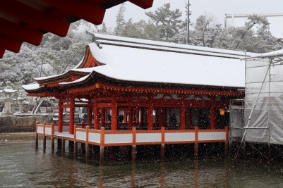
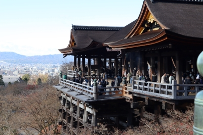

Travel
 Japan Travel
In December 2022, I traveled by myself for the first time. I enjoy exploring new places and taking pictures when I travel. I went to 7 different cities in Japan. Since I cannot speak the language, it was a little difficult to do a lot of things, but overall, it was a fun and interesting experience.